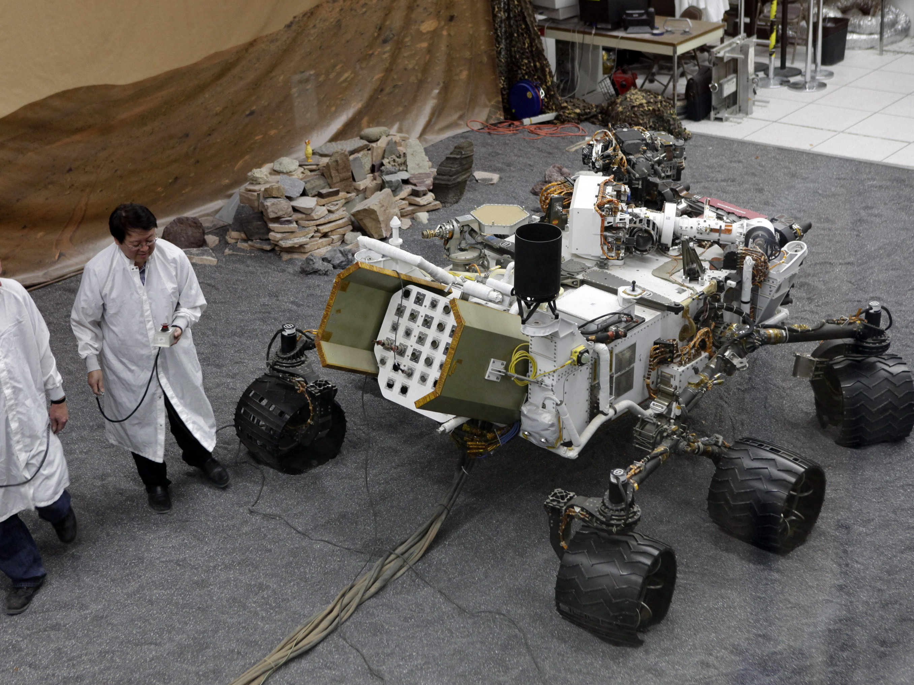

Panorama di Marte
Un bellissimo panorama della superficie marziana catturato dal rover Perseverance.

Curiosity Rover
Il rover Curiosity della NASA esplora Marte dal 2012, fornendo importanti dati sul pianeta.
Marte dall'orbita
Una spettacolare vista di Marte dallo spazio, che mostra la sua atmosfera e superficie.